Five samples with CFG, w = 7
same seeds as Part 1.6
A flow model generates an image by starting from pure Gaussian noise and following a learned velocity field until it reaches a clean image. In Part A, I use a large pretrained text-to-image flow model (PixNerd-XXL) to see how this works: I add noise to images, denoise them in one step and iteratively, generate new images, add classifier-free guidance, and then use the same sampler for image editing, visual anagrams, and hybrid images. In Part B, I build and train my own UNet on MNIST: first as a single-step denoiser, then as a time-conditioned and class-conditioned flow matching model that generates digits from noise.
Throughout this project, \(t = 0\) is pure noise and \(t = 1\) is a clean image. Noisy images lie on the straight line between a noise sample \(\epsilon\) (or \(x_0\)) and a clean image \(x_1\): $$ x_t = (1 - t)\,\epsilon + t\,x_1 $$ so the velocity along this path is constant: \(\frac{d}{dt}x_t = x_1 - \epsilon\).
All Part A results use seed 180, an Euler step size of \(h = 0.02\), and the prompt "a high quality photo" unless noted otherwise.
For my own image, I used a photo I took of the Golden Gate Bridge at night.
The forward process blends the clean image with Gaussian noise. I sampled a single noise tensor \(\epsilon\) and reused it at \(t = 0.25, 0.5, 0.75\), so all three noisy images lie on the same path from noise to my image. It's important to use the same \(\epsilon\) value because the ground-truth velocity in Part 1.4 is \(x_1 - \epsilon\), which only matches these noisy images if it uses the exact same noise.
def interpolate(image, noise, t):
return (1 - t) * noise + t * image
epsilon = noise(SEED)
noisy = {t: interpolate(image, epsilon, t) for t in [.25, .50, .75]}
assert torch.equal(interpolate(image, epsilon, 0), epsilon) # t = 0 is pure noise
assert torch.equal(interpolate(image, epsilon, 1), image) # t = 1 is the clean imageAt \(t = 0.25\) the bridge is barely visible through the noise; by \(t = 0.75\) the image is mostly clean, with only some grain left.
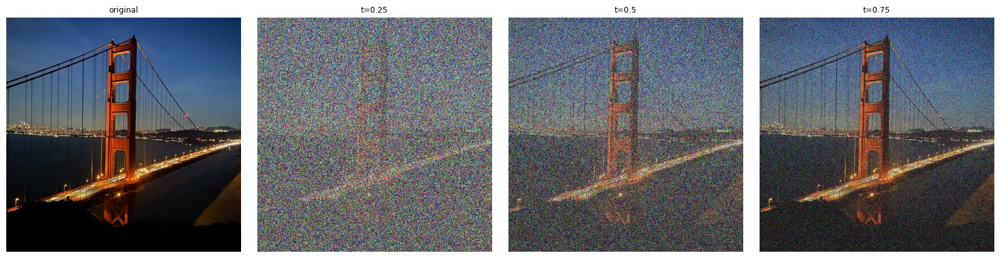
As a baseline, I tried to denoise each input without a model. Dividing by \(t\) restores the image's full brightness, but also scales up the noise: $$ \frac{x_t}{t} = x_1 + \frac{1 - t}{t}\,\epsilon $$ The noise is multiplied by 3 at \(t = 0.25\), by 1 at \(t = 0.5\), and by about 0.33 at \(t = 0.75\). I then applied a Gaussian blur with \(\sigma \in \{1, 2, 4, 8, 16\}\) and kept the one with the lowest mean squared error against the known clean image. This is only possible because I know the clean image, so it is a best-case baseline rather than a real denoiser.
| t | Noise scale after \(x/t\) | Best \(\sigma\) |
|---|---|---|
| 0.25 | 3.0 | 8 |
| 0.50 | 1.0 | 4 |
| 0.75 | 0.33 | 2 |
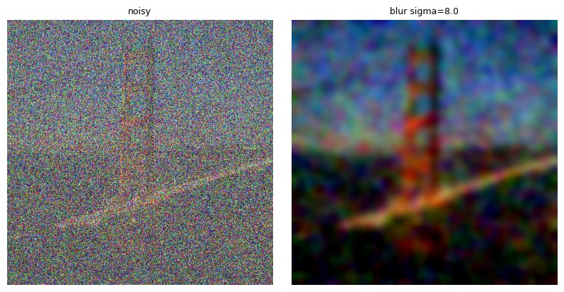
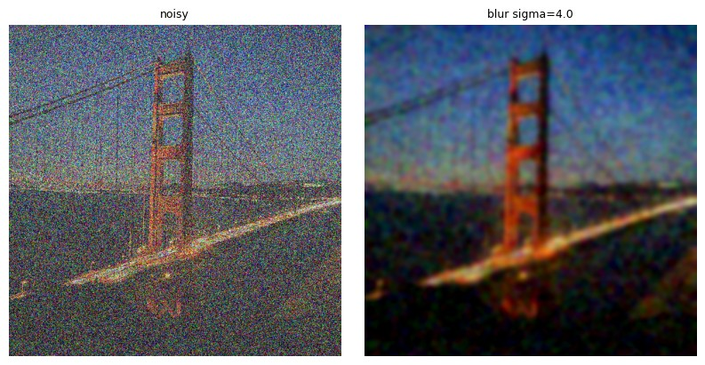
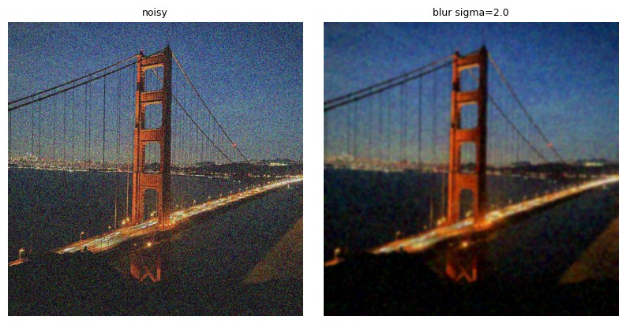
The more noise there is, the larger the blur that minimizes the error, and the more real detail it destroys. At \(t = 0.25\), the tower and roadway survive only as blurry shapes, covered in colored blotches: those are low-frequency parts of the noise, on the same scale as the image structure, so blurring cannot remove them. At \(t = 0.75\), \(\sigma = 2\) keeps most of the scene but softens the cables and city lights. A Gaussian filter cannot tell noise from fine image detail; it removes all high frequencies equally.
The flow model predicts the velocity \(\hat v_t = v_\theta(x_t, t, c)\). Since the path is a straight line, following that velocity for the remaining time \(1 - t\) gives an estimate of the clean image in a single step: $$ \hat x_1 = x_t + (1 - t)\,v_\theta(x_t, t, c) $$ I checked that the predicted velocity has the same shape, dtype, and device as the image.
def one_step_denoise(x, t, condition, predict_velocity):
return x + (1 - t) * predict_velocity(x, t, condition)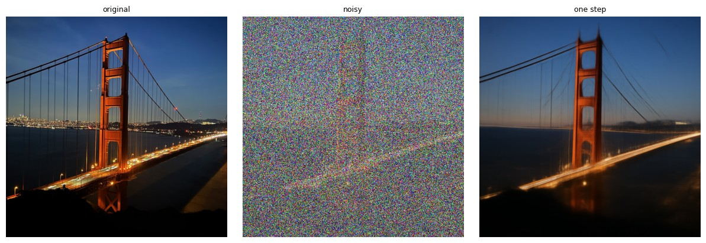
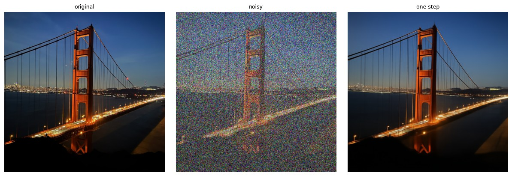
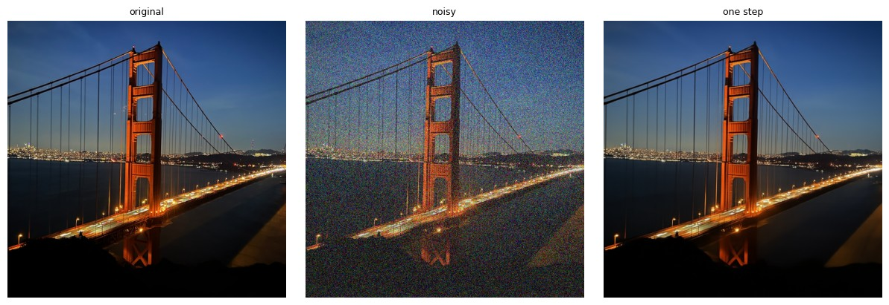
The one-step estimates are far better than the blur. Even at \(t = 0.25\), where the bridge is almost invisible, the model recovers the bridge structure, the lights on the bridge, and the dark water, though the result is soft: the thin cables are mostly gone and the city lights are smeared. At \(t = 0.5\) nearly everything comes back, and at \(t = 0.75\) the estimate is hard to tell apart from the original. The blurriness at low \(t\) is expected. Many clean images are consistent with a very noisy input, and a single prediction trained with a squared error lands near their average, which is blurry.
Here I compare what the model adds in one step, \((1 - t)\,\hat v_t\), with the update that would recover my exact image. Using the saved noise, \(v_{\text{gt}} = x_1 - \epsilon\), so \((1 - t)\,v_{\text{gt}} = x_1 - x_t\). The error map is the RMS difference across RGB at each pixel: $$ E_t = \sqrt{\operatorname{mean}_{\text{RGB}}\Big(\big[(1 - t)(\hat v_t - v_{\text{gt}})\big]^2\Big)} $$
@torch.inference_mode()
def velocity_diagnostics(x_t, t, clean_image, epsilon, condition, predict_velocity):
v_hat = predict_velocity(x_t, t, condition).float()
v_gt = (clean_image - epsilon).float()
predicted_update = (1 - t) * v_hat
ground_truth_update = (1 - t) * v_gt
error_map = ((predicted_update - ground_truth_update) ** 2).mean(dim=1).sqrt()
return predicted_update, ground_truth_update, error_mapBoth updates are shown on one shared symmetric color scale with zero at middle gray, and all three error maps share one linear scale.
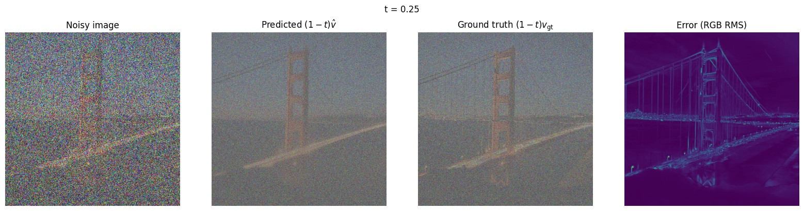
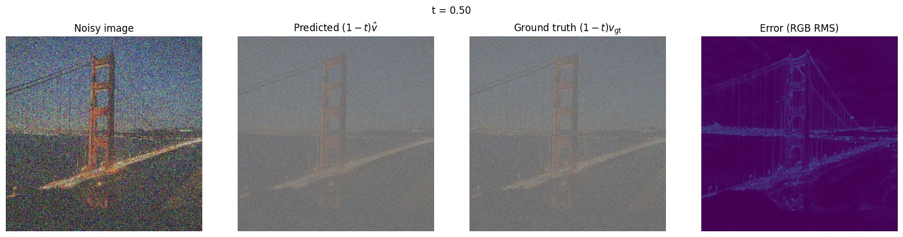
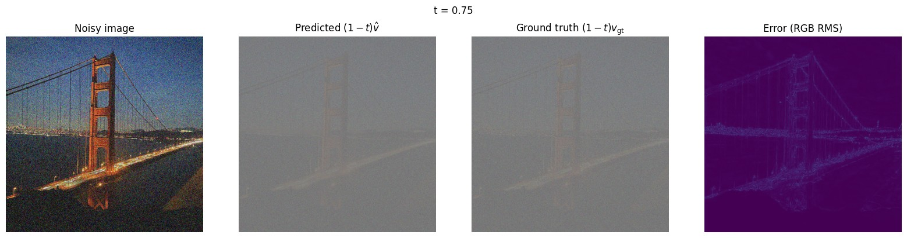
The updates fade toward gray as \(t\) grows. As \(x_t\) gets closer to the clean image, there is less left to add, and the \((1 - t)\) factor shrinks the update further.
The structure matches. The predicted and ground-truth updates contain the tower, roadway, and cables in the same places and colors, so the model clearly recognizes the scene. The ground truth is sharper, with crisper cables and city lights along the shore, while the prediction is softer.
The error is concentrated in fine detail. The error maps light up along the cables, the tower outline, and the lights, and stay near zero in flat regions like the sky and water. The error is largest at \(t = 0.25\) and fades by \(t = 0.75\): the more of the image survives in \(x_t\), the less the model has to guess.
Instead of jumping straight to \(t = 1\), Euler's method takes many small steps, recomputing the velocity each time: $$ x_{t+h} = x_t + h\,v(x_t, t) $$ If the next step would overshoot \(t = 1\), the final step is shortened so the trajectory ends exactly at 1. Because adding 0.02 repeatedly accumulates floating-point error, I compare against 1 with a small tolerance and snap the final time to exactly 1. A constant test velocity confirms the step counts: 50 calls from \(t = 0\), 25 from \(t = 0.5\), and 4 from \(t = 0.93\) (three steps of 0.02 and a final step of 0.01).
@torch.inference_mode()
def euler_sample(x_start, t_start, step_size, velocity):
x, t = x_start, t_start
states = [(t, x)]
n = 0
while 1 - t > 1e-9:
h = min(step_size, 1 - t) # shorten the final step
x = x + h * velocity(x, t)
t = 1.0 if 1 - (t + h) < 1e-9 else t + h
n += 1
if n % 5 == 0 or t == 1.0:
states.append((t, x)) # every fifth update and the final result
return x, statesI denoised the saved \(t = 0.5\) input with \(h = 0.02\) (25 updates). The noise fades gradually, and the cables and city lights sharpen over the last few steps.
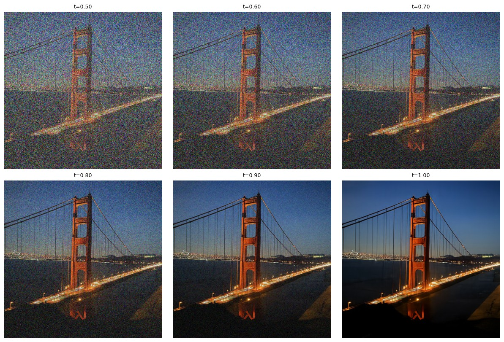
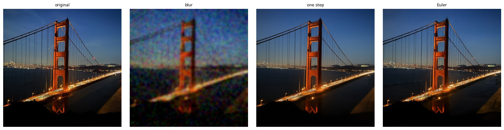
| Method (t = 0.5 input) | MSE to the original |
|---|---|
| Gaussian blur (best σ) | 0.0245 |
| One-step denoising | 0.0073 |
| Euler, 25 steps | 0.0088 |
Both model-based methods are far better than the blur. Interestingly, the Euler result looks a bit sharper than the one-step estimate (the cables and water reflections are crisper), but it has a slightly higher error. Iterative sampling commits to specific, plausible fine details, which do not always match my exact photo pixel for pixel. The one-step estimate is closer to an average of the possibilities, and mean squared error favors averages. Lower error does not mean better-looking.
Starting the Euler sampler at \(t = 0\) from pure noise turns it into a generator. I sampled five independent noise images (seeds 180–184) and integrated from 0 to 1
in 50 updates with "a high quality photo".
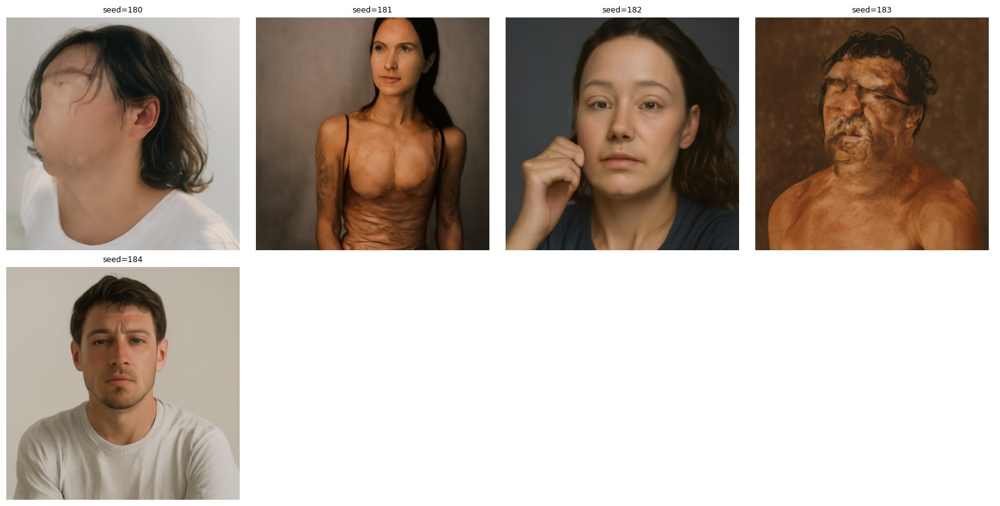
The generic prompt led the model to portraits of people in every sample. The quality is inconsistent: seed 182 and 184 look like somewhat believable photos, but seed 180's face is fully missing and seed 183's face and body are very distorted. Without guidance, the model only weakly follows the prompt, and samples often end up off the image distribution.
Classifier-free guidance evaluates the model twice at the same \(x\) and \(t\): once with the prompt and once with the empty prompt as a null condition. It then pushes the velocity further in the direction the prompt points: $$ v_{\text{cfg}} = v_c + w\,(v_c - v_u) $$ With \(w = 0\) this is the ordinary conditional prediction, which I checked with an exact equality test.
def cfg_velocity(x, t, condition, w, predict_velocity, null_condition=''):
v_c = predict_velocity(x, t, condition)
v_u = predict_velocity(x, t, null_condition)
return v_c + w * (v_c - v_u)I generated five images with \(w = 7\) and \(h = 0.02\), using the same five initial noises as Part 1.6.
Guidance makes a big difference. All five images are now much more believable headshots with distinct eyes and skin, including seeds 180 and 183, which were distorted without guidance. Because the initial noise is the same, some of the layout carries over: seed 182 still has a hand raised to the face, and the lighting and framing roughly follow the unguided samples. The tradeoff is variety: with guidance, every sample is a centered, front-facing portrait on a plain background, so the images are higher quality but much more alike.
All Part 3 results use \(h = 0.02\), \(w = 7\), and the empty prompt as the null condition.
To edit an image, I noise it to a starting time \(t_{\text{start}}\) and then run the guided sampler from there to 1: $$ x_{t_{\text{start}}} = (1 - t_{\text{start}})\,\epsilon + t_{\text{start}}\,x_1 $$ The starting time controls how much of the original survives. A small \(t_{\text{start}}\) leaves the input almost pure noise, so the model is free to invent a new image; a large \(t_{\text{start}}\) keeps most of the input fixed. I used the seven starting times 0.02, 0.04, 0.06, 0.10, 0.14, 0.25, and 0.50.
def edit(image, noise, t_start, condition, predict_velocity, w=7, step_size=0.02):
x_start = (1 - t_start) * noise + t_start * image
guided = lambda x, t: cfg_velocity(x, t, condition, w, predict_velocity, null_condition)
return euler_sample(x_start, t_start, step_size, guided)[0]
Even at \(t = 0.02\), a tall white shape appears where the tower is, against a blue background. By 0.04–0.06 it becomes a tapered white tower with trees below, in the right place but with none of the Campanile's details. At 0.10–0.14 it gains a simplified top with a single window, at 0.25 the arched openings and faint clock return, and at 0.50 the result is nearly identical to the original.
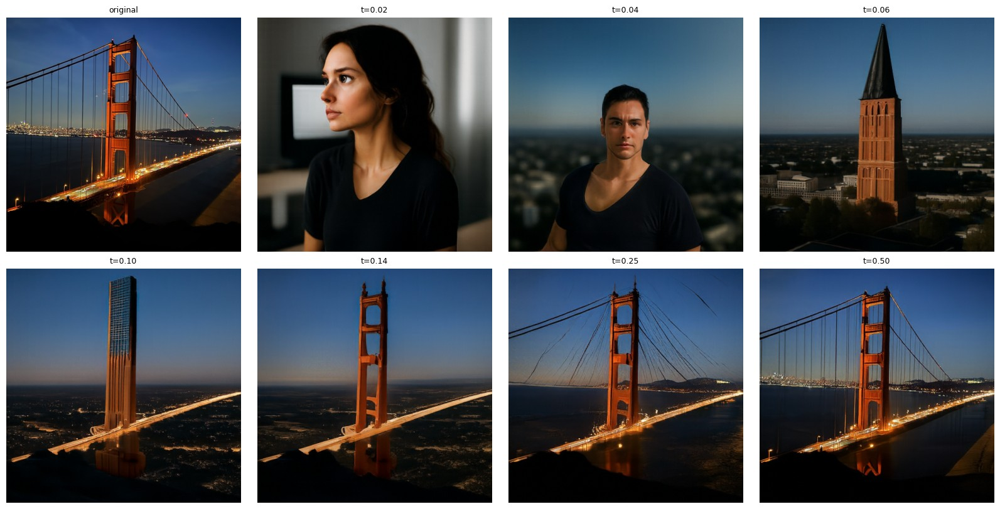
This image shows the progression especially clearly. At 0.02–0.04, only the dark blue sky survives, and the model falls back on its prior for "a high quality photo": portraits of people. At 0.06 the tower becomes a brick church tower over a city, at 0.10 a glass skyscraper standing on the lit roadway, and at 0.14 it finally becomes a bridge tower, but with no cables. The cables come back at 0.25, and 0.50 is a faithful reconstruction.
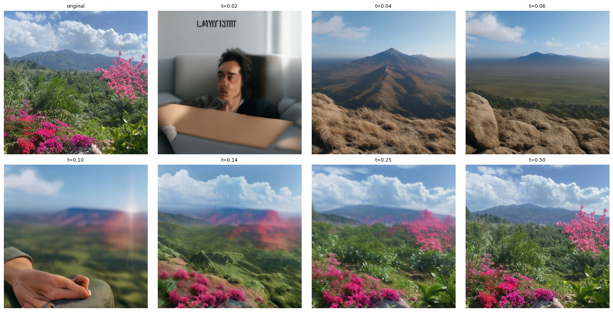
At 0.02 the result is unrelated (a person on a couch), while 0.04–0.06 become dry mountain landscapes that keep only the sky-over-hills layout. At 0.10–0.14 the pink color of the flowering tree survives as a pink patch on the hills, and by 0.25 the flowering tree and pink flowers in the foreground are back in their original places.
I repeated the procedure on a photo from the web (a duck with a flower on its head) and two of my own drawings: a simple painted landscape with flowers, and a cartoon dog surrounded by science doodles.
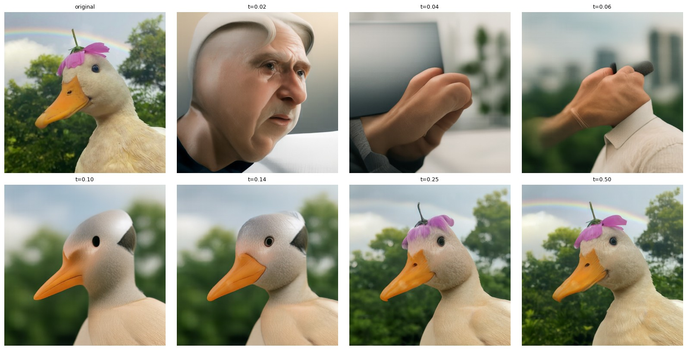
Low starting times produce unrelated images (a face, hands), as before. The most interesting results are at 0.10–0.14: the model produces a clean, realistic duck, but removes the flower and the rainbow. Edits pull images toward what is typical in the training data, and a flower on a duck's head is not typical. At 0.25 and above, the flower and rainbow are kept.
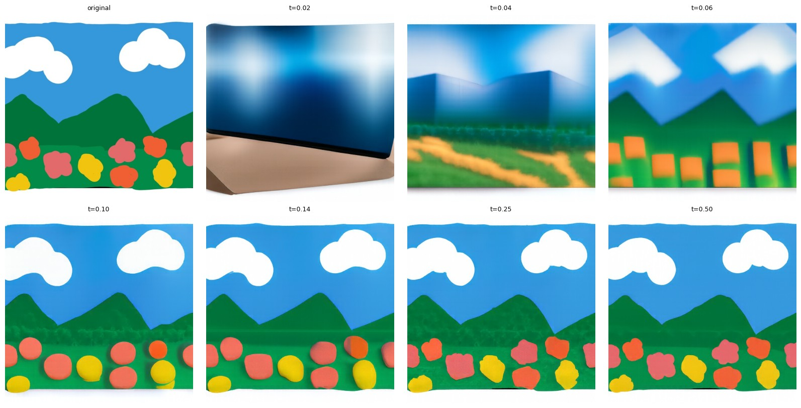
This drawing stays cartoon-like from 0.10 upward, only slightly cleaned up. Large flat color regions already look like valid clip art, so the model does not feel pushed toward realism. The one photo-like result, a grassy field under a blue sky at 0.04, already loses the drawing's layout.
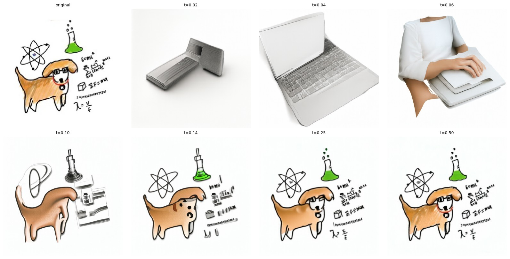
The white background of this drawing turns into white studio product shots at low starting times (a laptop, a person holding papers). At 0.10–0.14, the dog becomes a smoothly shaded 3D-style dog, and the scribbled equations are reinterpreted as lab equipment like a microscope. From 0.25 on, the drawing is kept almost exactly.
Here I used the same procedure, but replaced "a high quality photo" with a prompt describing the edit I wanted. The image now competes with the prompt:
low starting times follow the prompt, and high starting times follow the image.
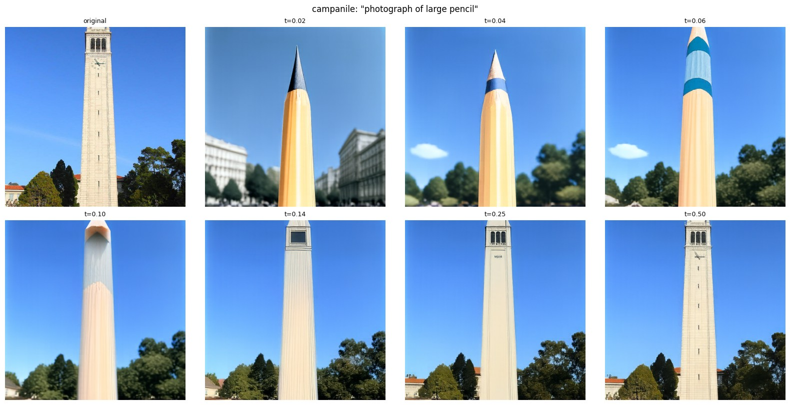
At 0.02–0.06 the Campanile becomes a giant sharpened pencil standing in its place, with the trees and sky kept around it. At 0.10 the tower is a pencil-colored shaft with a pencil tip, and from 0.14 on the Campanile's shape and window take over again.
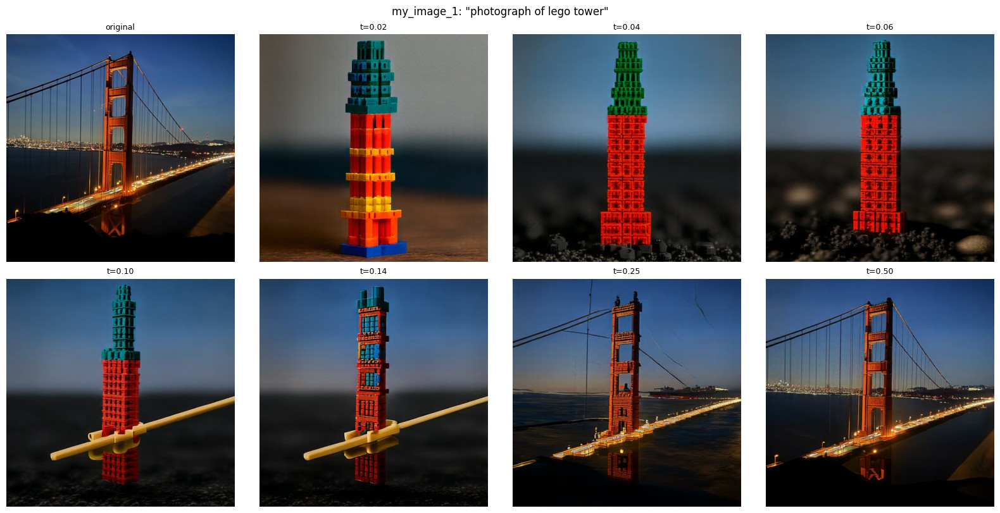
At low starting times the bridge tower becomes a colorful toy-brick tower. My favorite results are at 0.10–0.14, where the tower is made of red bricks and the lit roadway becomes a yellow plastic bar passing through it. At 0.25 the Golden Gate structure returns with a brick texture, and at 0.50 the bridge is back to normal.
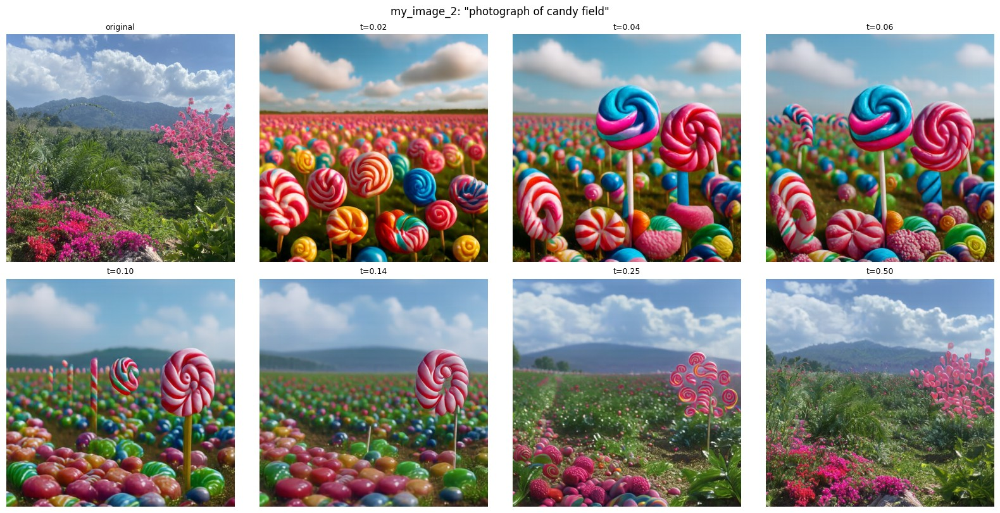
At 0.02–0.06 the landscape becomes a field of swirled lollipops under a cloudy sky. At 0.10–0.14 the mountain silhouette from the original returns behind a field of gumdrops, and at 0.25 the pink flowering tree turns into a bush of lollipops, which is the best mix of the original scene and the prompt. At 0.50 only the pink flowers carry a hint of candy.
Across all three, starting times around 0.10–0.14 were the sweet spot: early enough for the prompt to change what objects are, late enough to keep the original layout.
A visual anagram looks like one thing upright and another when rotated 180°. With \(F\) as the 180° rotation (flipping both spatial axes), each Euler step averages two guided velocities: one for prompt \(a\) on the image as it is, and one for prompt \(b\) on the rotated image, rotated back into the same frame: $$ v = \tfrac{1}{2}\Big(v_{\text{cfg}}(x, t, c_a) + F\big(v_{\text{cfg}}(F(x), t, c_b)\big)\Big) $$ Since \(F\) is its own inverse, rotating twice gives back the original image, which I checked with an exact equality test.
def visual_anagrams(noise, condition_a, condition_b, predict_velocity, w=7, step_size=0.02):
def velocity(x, t):
v_a = cfg_velocity(x, t, condition_a, w, predict_velocity, null_condition)
v_b = rotate180(cfg_velocity(rotate180(x), t, condition_b, w, predict_velocity, null_condition))
return (v_a + v_b) / 2
return euler_sample(noise, 0.0, step_size, velocity)[0]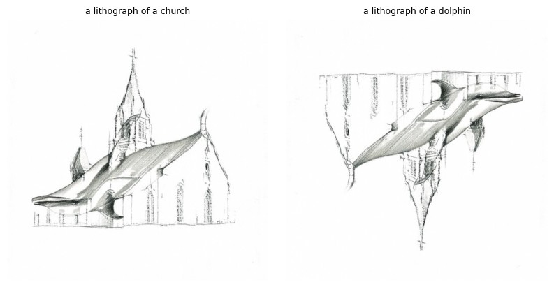
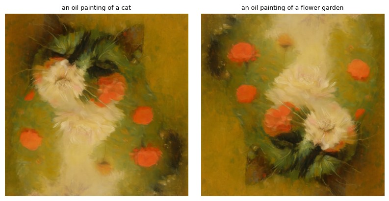
Church / dolphin. Upright, the image is a sketched church with a steeple; rotated, the steeple becomes the bottom of the frame and a dolphin swims across the top. Both subjects are recognizable, but the dolphin is visible in both orientations, since its body lies diagonally across the church instead of being built out of the church's own lines.
Cat / flower garden. Rotated, the image is clearly a flower garden with white blossoms and red flowers. The cat is subtler: it is easiest to see when the image is viewed small, where the white blossoms form a cat's face and chest, the dark leaves at the top form its ears, and the red flowers look like markings on its fur. Loose, painterly styles helped here, since brush strokes can be read as either fur or petals.
Several prompt pairs and seeds were needed. A successful run does not guarantee an illusion: often one prompt dominates both views, or the second subject only appears as texture.
A hybrid image looks like one subject from far away and another up close. As in Project 2, this uses frequencies, but here the split is applied to the velocities at every Euler step: the low frequencies come from prompt \(a\) and the high frequencies from prompt \(b\): $$ v = \operatorname{lowpass}(v_a) + v_b - \operatorname{lowpass}(v_b) $$ Both guided predictions use the same image and time. The low-pass filter is a Gaussian blur with \(\sigma = 16\) and kernel size 265 at 512×512, and \(v_b - \operatorname{lowpass}(v_b)\) is the matching high-pass.
def make_hybrids(noise, condition_a, condition_b, predict_velocity, w=7, step_size=0.02):
def velocity(x, t):
v_a = cfg_velocity(x, t, condition_a, w, predict_velocity, null_condition)
v_b = cfg_velocity(x, t, condition_b, w, predict_velocity, null_condition)
return lowpass(v_a) + v_b - lowpass(v_b)
return euler_sample(noise, 0.0, step_size, velocity)[0]Each result is shown at full size (close) and at 64×64 (distant). Squinting or stepping back from the screen also simulates the distant view.
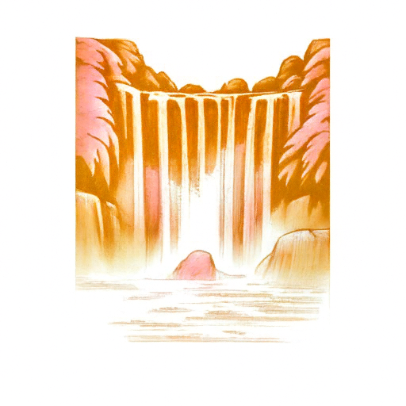
Up close, both results clearly show the high-frequency prompt: dark blue daisies in the first, and a waterfall between pink cliffs in the second. From far away, the low-frequency prompt only shows up as the overall silhouette. In the first image, the flowers are arranged in a dark arc around a pale oval, like hair around a face, and in the second, the cliffs rise into two points at the top corners, like a cat's ears. The distant subjects are much weaker than the close ones. At \(\sigma = 16\), the low-pass keeps only very coarse layout, and the lithograph style on a white background gives the distant prompt little shading to work with. Subjects with one bold, high-contrast shape (like a skull or a face filling the frame) are more likely to survive the low-pass.
In Part B, I build a UNet and train it on MNIST (28×28 grayscale digits, pixel values in \([0, 1]\)), first as a single-step denoiser and then as a flow matching model that generates digits from pure noise.
The UNet is built from a few simple blocks. Every convolutional block is a convolution followed by BatchNorm and GELU:
| Block | Layers | Effect on shape |
|---|---|---|
| Conv | Conv2d(k=3, s=1, p=1) + BN + GELU | changes channels, keeps \(H \times W\) |
| DownConv | Conv2d(k=3, s=2, p=1) + BN + GELU | halves \(H \times W\) |
| UpConv | ConvTranspose2d(k=4, s=2, p=1) + BN + GELU | doubles \(H \times W\) |
| Flatten | AvgPool2d(7) + GELU | 7×7 → 1×1 |
| Unflatten | ConvTranspose2d(k=7, s=7, p=0) + BN + GELU | 1×1 → 7×7 |
| ConvBlock | Conv → Conv | changes channels |
| DownBlock | DownConv → ConvBlock | halves \(H \times W\) |
| UpBlock | UpConv → ConvBlock | doubles \(H \times W\) |
UpConv uses a kernel of 4 instead of 3: for a transposed convolution, the output size is \((H - 1)\cdot s - 2p + k\), so kernel 4 gives exactly \(2H\) (7 → 14 → 28), while kernel 3 would give \(2H - 1\) and break the skip connections. Unflatten works the same way: \((1 - 1)\cdot 7 + 7 = 7\).
The full UNet goes down to a 1×1 bottleneck and back up, concatenating each up-path tensor with the matching down-path tensor (the skip connections). Concatenation stacks channels, which is why the up blocks take \(4D\) and \(2D\) input channels. The final layer is a plain 3×3 convolution with no BatchNorm or GELU, since the output can be any value.
def forward(self, x):
e1 = self.init_conv(x) # (D, 28, 28)
e2 = self.down1(e1) # (D, 14, 14)
e3 = self.down2(e2) # (2D, 7, 7)
z = self.flatten(e3) # (2D, 1, 1)
d = self.unflatten(z) # (2D, 7, 7)
d = self.up1(torch.cat([d, e3], dim=1)) # 4D in -> (D, 14, 14)
d = self.up2(torch.cat([d, e2], dim=1)) # 2D in -> (D, 28, 28)
d = self.final_block(torch.cat([d, e1], dim=1)) # 2D in -> (D, 28, 28)
return self.out(d) # (1, 28, 28)The denoiser is trained to map a noisy digit \(z = x + \sigma\epsilon\), with \(\epsilon \sim \mathcal{N}(0, I)\), back to the clean digit \(x\), using an L2 loss. The figure below shows the noising process for \(\sigma = 0.0, 0.2, 0.4, 0.5, 0.6, 0.8, 1.0\). All panels share the same \([0, 1]\) display range, so values pushed outside by the noise show as pure black or white.
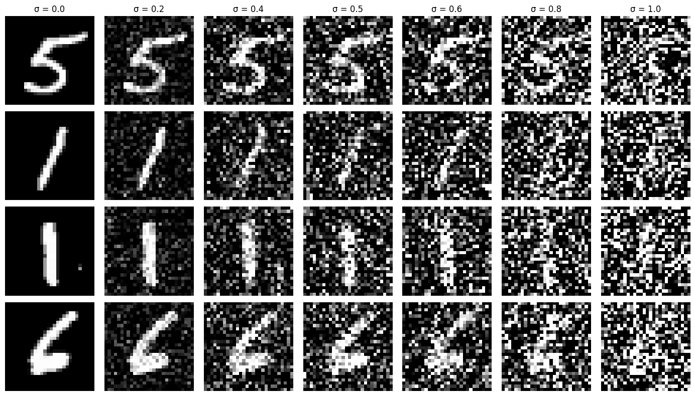
I trained the UNet with \(D = 128\) on the MNIST training set at \(\sigma = 0.5\), with batch size 256, Adam at a learning rate of \(10^{-4}\), and 5 epochs. The noise is sampled when each batch is fetched, so the network sees new noise every epoch.
for epoch in range(num_epochs):
for images, _ in tqdm(train_loader):
images = images.to(device)
noisy = images + noise_level * torch.randn_like(images) # z = x + sigma * eps
outputs = model(noisy)
loss = criterion(outputs, images) # MSE to the clean digit
optimizer.zero_grad(); loss.backward(); optimizer.step()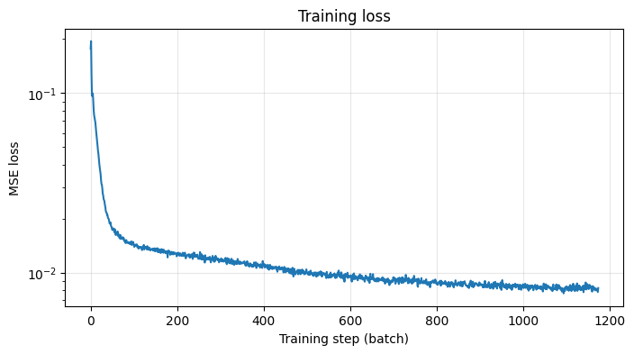
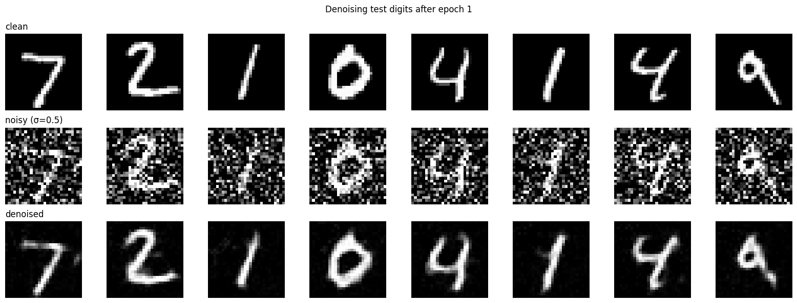
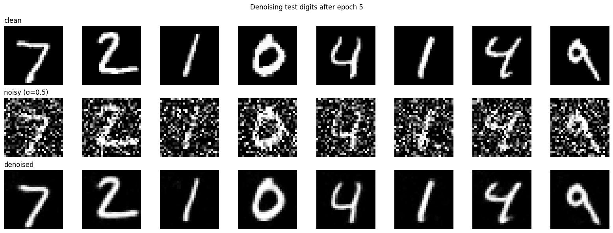
After one epoch, every denoised digit is recognizable, but the strokes are blurry and a little speckled. After five epochs, the outputs are clean and sharp and closely match the originals.
The denoiser was only trained at \(\sigma = 0.5\). To see how it generalizes, I tested it on test digits at noise levels it never saw.
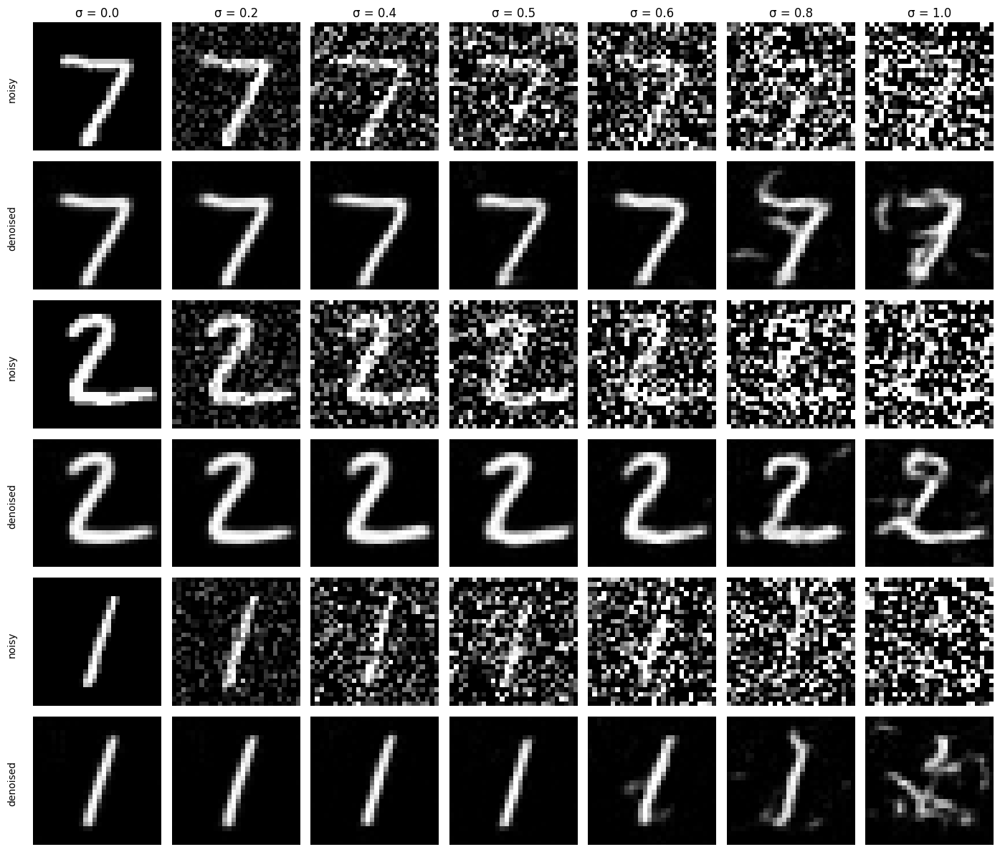
Up to \(\sigma = 0.5\), the outputs are clean. At \(\sigma = 0\), the digit comes back nearly unchanged but slightly blurred, since the model never saw clean inputs during training. At \(\sigma = 0.6\) the results are still mostly good, but at 0.8 and 1.0 they break down: extra strokes appear, the 1 bends into a different shape, and at \(\sigma = 1.0\) it turns into scribbles. The model learned to remove noise of a specific strength, and it under-corrects stronger noise.
To try to make denoising generative, I trained a fresh UNet with the same settings, but with pure noise \(z = \epsilon\) as the input and a clean digit as the target.
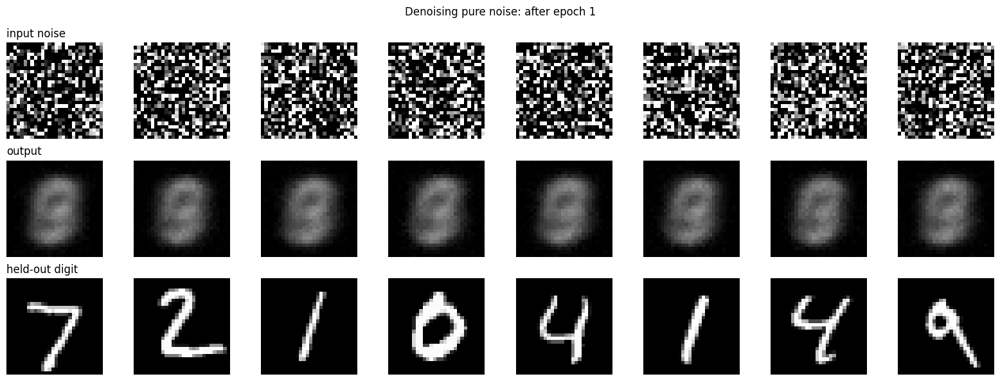
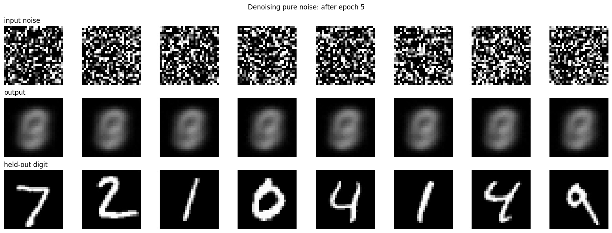
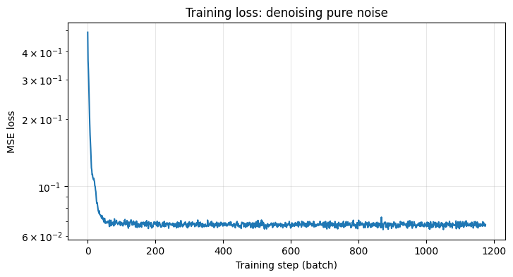
What patterns appear? Every output is the same blurry, gray blob, no matter what noise goes in. It looks like several digits overlaid: a faint loop resembling a 0, 8, or 9, brightest where many digits have strokes. The outputs at epoch 5 are almost identical to those at epoch 1.
How do they relate to the training images? The blob is roughly the pixel-wise average of the MNIST training set. It resembles all digits a little, but none of them specifically.
Why? The input noise is independent of the target digit, so it carries no information about which digit to produce. Under an MSE loss, the best single prediction for an unknown target is its mean, \(\mathbb{E}[x]\), so the network learns to ignore its input and output the average digit. The loss plateaus at the variance of the dataset around that mean and cannot drop further. This is why one-step denoising cannot generate varied samples, and it motivates the iterative approach of flow matching.
Flow matching trains the UNet to predict the velocity along the straight path from noise \(x_0 \sim \mathcal{N}(0, I)\) to a clean digit \(x_1\): $$ x_t = (1 - t)\,x_0 + t\,x_1, \qquad u(x_t, t) = x_1 - x_0 $$ $$ L = \mathbb{E}_{x_0, x_1, t \sim U[0,1]}\,\big\|(x_1 - x_0) - u_\theta(x_t, t)\big\|^2 $$ Generation then integrates the predicted velocity from \(t = 0\) to 1 with Euler steps, exactly like Part A.
The UNet needs to know \(t\), since the right velocity depends on how noisy the input is. An FCBlock (Linear + GELU, then Linear) turns the scalar \(t\) into a vector,
which multiplies the feature maps channel by channel at two places: the unflatten output (\(2D\) channels) and the first up block's output (\(D\) channels).
t = t.view(-1, 1).float() # (N,) -> (N, 1) for nn.Linear
t1 = self.fc1_t(t)[:, :, None, None] # (N, 2D, 1, 1)
t2 = self.fc2_t(t)[:, :, None, None] # (N, D, 1, 1)
...
d = self.unflatten(z) * t1 # modulated unflatten
d = self.up1(torch.cat([d, e3], dim=1)) * t2 # modulated up1For each batch, I sample a random \(t \sim U[0, 1]\) per image and fresh noise \(x_0\), build \(x_t\), and regress the UNet's output onto \(x_1 - x_0\). I used \(D = 64\), batch size 64, Adam with an initial learning rate of \(10^{-2}\), and an exponential learning rate scheduler with \(\gamma = 0.1^{1/10}\), stepped after each of the 10 epochs. The learning rate decays from \(10^{-2}\) to \(10^{-3}\).
def time_fm_forward(unet, x_1, num_ts):
N = x_1.shape[0]
x_0 = torch.randn_like(x_1) # noise
t = torch.rand(N, device=x_1.device) # one t per image
t_ = t.view(N, 1, 1, 1)
x_t = (1 - t_) * x_0 + t_ * x_1
u_pred = unet(x_t, t)
return nn.functional.mse_loss(u_pred, x_1 - x_0) # target flow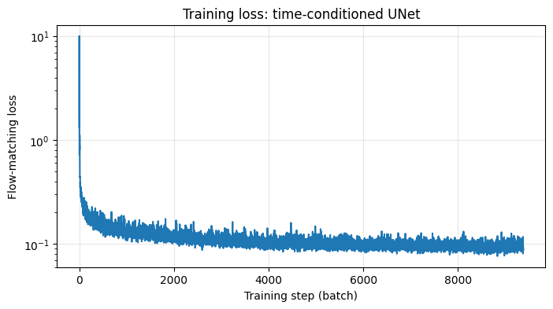
The loss does not approach zero. For a given \(x_t\) and \(t\), many pairs of noise and clean digits are possible, so the best the model can do is predict the average flow, and the leftover variance keeps the loss around 0.1.
Sampling starts from pure noise and takes Euler steps of size \(1/T\) with \(T = 50\). I saved the weights after epochs 1, 5, and 10, and sampled 40 digits from each checkpoint with the same seed, so every grid starts from the same noise.
x = torch.randn(N, C, *img_wh, device=device, generator=g) # start at t = 0
dt = 1.0 / num_ts
for i in range(num_ts):
t = torch.full((N,), i * dt, device=device)
x = x + dt * unet(x, t) # Euler step along the flow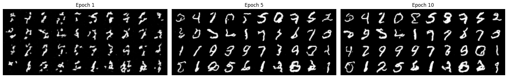
After one epoch, the samples are mostly scribbles. By epoch 5 many are legible digits, and by epoch 10 most are recognizable, though some are still malformed or ambiguous. Since the same noise is used for every grid, the same digit often sharpens in place across epochs. Without class conditioning, the model also has no control over which digit it produces.
To control which digit is generated, I added two more FCBlocks for the class \(c\), given as a one-hot vector of length 10. The class now scales the features and the time shifts them: $$ \text{unflatten} \leftarrow c_1 \cdot \text{unflatten} + t_1, \qquad \text{up1} \leftarrow c_2 \cdot \text{up1} + t_2 $$ To support classifier-free guidance, the class vector is dropped (set to all zeros) for 10% of training examples (\(p_{\text{uncond}} = 0.1\)), so the model also learns to generate without a class.
c = nn.functional.one_hot(c, self.num_classes).float() # (N,) -> (N, 10)
if mask is not None:
c = c * mask.view(-1, 1).float() # mask == 0 -> unconditional
...
d = c1 * self.unflatten(z) + t1
d = c2 * self.up1(torch.cat([d, e3], dim=1)) + t2
# in training:
mask = (torch.rand(N, device=x_1.device) >= p_uncond).float()Training is the same as the time-only model, using the labels as the class. I used the same settings: \(D = 64\), batch size 64, 10 epochs, Adam at \(10^{-2}\) with exponential decay.
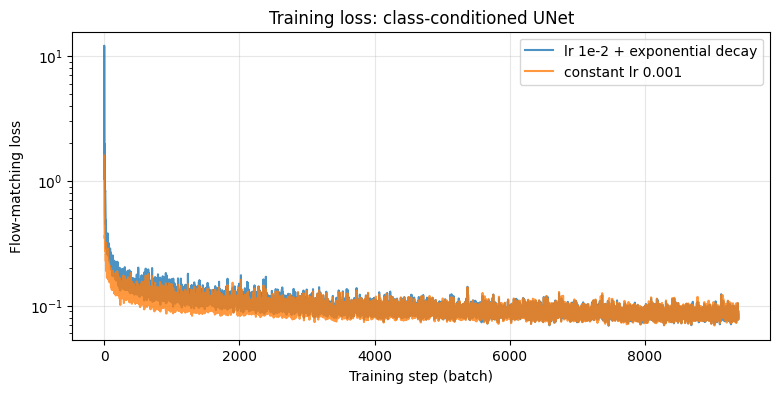
Sampling uses classifier-free guidance with \(\gamma = 5\) and 300 Euler steps. At each step, the model is evaluated once with the class and once with the class dropped, at the same \(x\) and \(t\): $$ u = u_{\text{uncond}} + \gamma\,(u_{\text{cond}} - u_{\text{uncond}}) $$ I generated four instances of each digit, with each row showing the digits 0 through 9, from the epoch 1, 5, and 10 checkpoints using the same seed.
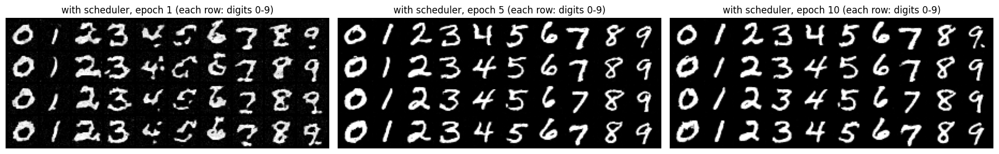
Class conditioning makes training converge much faster. Even after one epoch, every row reads 0 through 9 in order, though the strokes are speckled and some digits (like the 4s and 5s) are rough. By epoch 5 the digits are clean, and epoch 10 is cleaner still, with a variety of handwriting styles within each digit.
To remove the scheduler, I trained a second, independent class-conditioned model with the same settings but a constant learning rate and no scheduler. To compensate for losing the decay, I used a constant learning rate of \(10^{-3}\), the value the scheduled run ends at, instead of the initial \(10^{-2}\). A constant \(10^{-2}\) would keep the large, noisy updates for the entire run, while \(10^{-3}\) keeps every update stable.
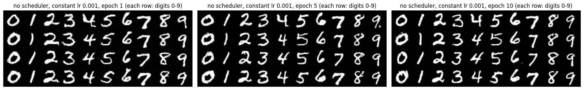
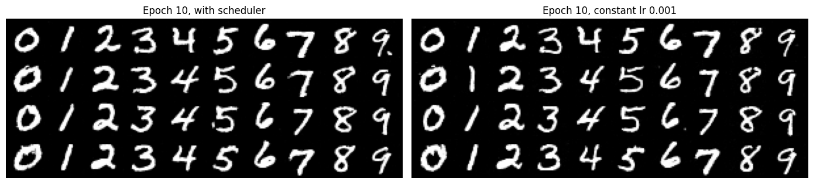
| Run | Learning rate | Final loss (last batch) |
|---|---|---|
| With scheduler | 10-2 decaying to 10-3 | 0.0795 |
| No scheduler | constant 10-3 | 0.0783 |
The constant learning rate maintained the same performance, and was actually better early in training. Its epoch 1 samples are already clean, while the scheduled run's epoch 1 samples are speckled: the large \(10^{-2}\) steps at the start make the first epoch noisier rather than faster. The loss curves confirm this: the constant-rate run is lower for roughly the first 2,000 steps. By epoch 10, both runs reach about the same loss and produce comparably clean digits. For this model, a single well-chosen constant learning rate is simpler and works just as well as the scheduler.